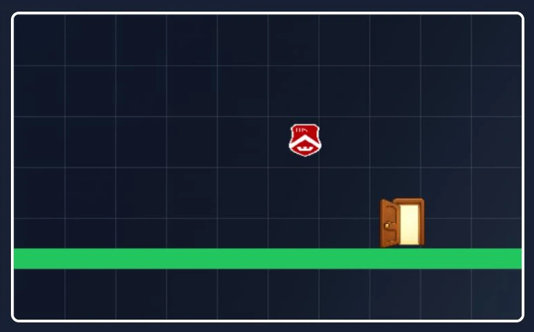

PROJECT 11 / 게임 · AI 활용 개발PROJECT 11 / Games · AI-Assisted Development
Bounce Sogang: 공 튀기기 게임과 맵 제작Bounce Sogang: Ball-Bouncing Game and Map Editor
- 참여 학과Participating department
- 컴퓨터공학전공Computer Science and Engineering
플레이 기능에서 한 단계 더 나아가 사용자가 맵을 만들고 시험할 수 있는 웹 게임으로 확장했습니다.Went a step beyond basic play by extending the web game so users can build and test their own maps.
01 문제 상황 Problem
정해진 스테이지를 반복하는 게임을 넘어, 사용자가 직접 난이도와 동선을 설계할 수 있는 게임을 만들고자 했습니다. 생성형 AI를 개발 보조로 활용하면서 물리 동작·편집·저장 기능이 함께 작동하도록 구성하는 것이 과제였습니다.The aim was to go beyond a game of fixed, repeated stages and build one where users design the difficulty and routes themselves. The challenge was to make physics, editing, and save features work together while using generative AI as a development aid.
02 사용 모델과 데이터 Models and Data
모델·기술Models · Techniques
- Codex를 코드 작성과 수정에 활용했습니다. 게임 실행에 별도의 학습 모델을 사용하는 프로젝트는 아닙니다.Codex was used to write and revise code. The project does not use a separately trained model to run the game.
- HTML·CSS·JavaScript와 Canvas 2D로 게임 및 맵 편집기를 구현했습니다.Implemented the game and map editor with HTML, CSS, JavaScript, and Canvas 2D.
데이터·입력Data · Inputs
- 발판·장애물·포털·목표 위치 등 스테이지 구성 데이터와 게임 그래픽.Stage layout data such as platforms, obstacles, portals, and goal positions, plus game graphics.
- 사용자가 만든 맵을 JSON 형식으로 저장·불러오기하며 별도의 머신러닝 학습 데이터셋은 사용하지 않았습니다.User-created maps are saved and loaded in JSON format; no separate machine learning training dataset was used.
03 구현 과정 Implementation
- 공의 이동과 충돌, 발판·목표의 동작을 구현합니다.Implements ball movement and collisions, and the behavior of platforms and goals.
- 사용자가 맵 요소를 배치하고 수정한 뒤 바로 시험할 수 있는 편집 기능을 추가합니다.Adds an editing feature that lets users place and modify map elements and test them immediately.
- 맵 데이터 저장·불러오기와 유효성 검사로 제작한 스테이지를 다시 플레이하도록 연결합니다.Map data saving, loading, and validation let users replay the stages they have built.
04 핵심 결과 Key Results
- 튜토리얼 11개와 개발자 스테이지 3개, 사용자 맵 제작 기능을 포함하는 게임을 구현했습니다.Implemented a game with 11 tutorials, 3 developer-made stages, and a user map creation feature.
- 조작 방식 단순화와 스프링·포털 등의 요소를 추가하고, 게임 로직과 편집 기능을 모듈로 나누어 개선했습니다.Simplified the controls, added elements such as springs and portals, and improved the code by splitting game logic and editing features into modules.

05 한계와 발전 방향 Limitations and Next Steps
- 사용성, 난이도 균형, 다양한 기기에서의 실행 성능을 평가한 정량 결과는 제시되지 않았습니다.No quantitative results evaluating usability, difficulty balance, or performance across devices were presented.
- 생성된 코드의 동작을 직접 실행·수정하는 과정이 필요했으며, AI 사용 자체가 게임 품질의 검증을 대신하지는 않습니다.The generated code had to be run and revised by hand, and the use of AI itself is no substitute for verifying game quality.
자료: 최종보고서. 제출 자료를 바탕으로 정리했으며, 결과는 해당 프로젝트의 구현·실험 범위에 해당합니다.Source: final report. Summarized from the submitted materials; results reflect the scope of the project's implementation and experiments.